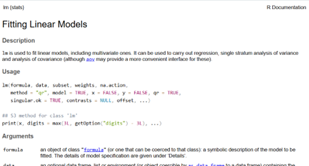
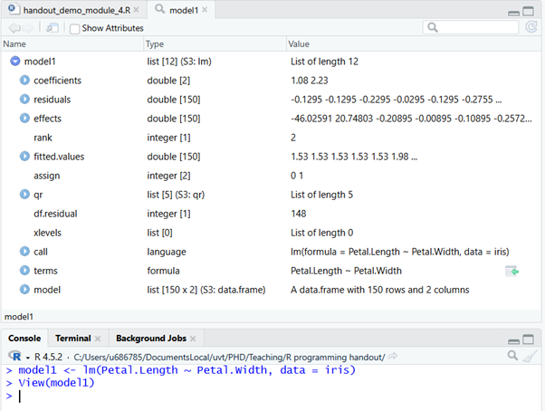

Chapter 6 Statistical Analysis
In this final module, we will look at how we can run some basic statistical functions in R. Fortunately, once the data has been properly loaded, checked, cleaned, and selected, running the statistical analysis is often as simple as running a single function with a handful of arguments.
We will not be discussing the logic behind statistical analyses, or the meaning of these results. That will be the focus of the Multivariate Analysis course.
Download link for Exercise 4 and the relevant Data: exercise 4
Download link for Answers to Exercise 4: solutions exercise 4
6.1 Formula Notation
Most statistical functions in R require you to specify your model with formula notation, in the format: y ~ x.
The analysis function will then take this formula notation and run your model to analyze the relationship between these variables and return the resulting output in a list from which you can then index the relevant results to present (described in more detail later).
If you wanted to add multiple variables, you would do so in the following format:
y ~ x1 + x2 + x3, etc.
If you wanted to add an interaction you would do so as follows:
y ~ x1:x2
Or equivalently:
y ~ x1 + x2 + x1*x2
As an overview, here is a table containing various common ways of specifying different formula notations.
| Formula.in.R | Meaning |
|---|---|
| y ~ 0 + x /n y ~ x - 1 | No intercept |
| y ~ x + z | Main effects |
| y ~x:z | Interaction |
| y ~ x*z | Main & interaction effects /n Equivalent to: /n y ~ x + z + x:z |
| y ~ poly(x, 2) | Quadratic (2nd order polynomial) |
| y ~ A | ANOVA, A is a factor variable |
| y ~ A + x | ANOVA + covariate |
| y ~ ABC - A:B:C | No 3rd order interaction |
6.2 Basic Statistical Tests
6.2.1 Linear Regression
The function used to conduct a linear regression in r is the lm() function. Typing ?lm will show us all the arguments we can specify.

There are many potential arguments to specify. Luckily, we can leave most of these functions with the default. We should make sure to specify the following arguments: formula & data.
As an example, we will use the iris dataset, and try to regress petal width on petal length. We can do this as follows:
lm(Petal.Length ~ Petal.Width, data = iris)
or
lm(iris$Petal.Length ~ iris$Petal.Width)
##
## Call:
## lm(formula = Petal.Length ~ Petal.Width, data = iris)
##
## Coefficients:
## (Intercept) Petal.Width
## 1.084 2.230We can see that we successfully ran the regression and we got our estimated coefficients (intercept and association between Petal.Width and Petal.Length).
However, we did not get any other results such as standard errors, t statistics, p-values, even degrees of freedom are missing.
If we want these additional results, we should first store our results as an object:

Looking at the model1 object, we can see that it is a list containing the results as well as fitting information for the linear regression model we just ran.
Because these results are a list, we can access additional results from this output by indexing our model1 object as we have done before:
## [1] 148## 1 2 3 4 5 6
## -0.129546132 -0.129546132 -0.229546132 -0.029546132 -0.129546132 -0.275534231
## 7 8 9 10 11 12
## -0.352540181 -0.029546132 -0.129546132 0.193447918 -0.029546132 0.070453868
## 13 14 15 16 17 18
## 0.093447918 -0.206552082 -0.329546132 -0.475534231 -0.675534231 -0.352540181
## 19 20 21 22 23 24
## -0.052540181 -0.252540181 0.170453868 -0.475534231 -0.529546132 -0.498528280
## 25 26 27 28 29 30
## 0.370453868 0.070453868 -0.375534231 -0.029546132 -0.129546132 0.070453868
## 31 32 33 34 35 36
## 0.070453868 -0.475534231 0.193447918 -0.129546132 -0.029546132 -0.329546132
## 37 38 39 40 41 42
## -0.229546132 0.093447918 -0.229546132 -0.029546132 -0.452540181 -0.452540181
## 43 44 45 46 47 48
## -0.229546132 -0.821522330 -0.075534231 -0.352540181 0.070453868 -0.129546132
## 49 50 51 52 53 54
## -0.029546132 -0.129546132 0.494525274 0.071531224 0.471531224 0.017519323
## 55 56 57 58 59 60
## 0.171531224 0.517519323 0.048537175 -0.013498528 0.617519323 -0.305474726
## 61 62 63 64 65 66
## 0.186501472 -0.228468776 0.686501472 0.494525274 -0.382480677 0.194525274
## 67 68 69 70 71 72
## 0.071531224 0.786501472 0.071531224 0.363507423 -0.297450924 0.017519323
## 73 74 75 76 77 78
## 0.471531224 0.940513373 0.317519323 0.194525274 0.594525274 0.125543125
## 79 80 81 82 83 84
## 0.071531224 0.186501472 0.263507423 0.386501472 0.140513373 0.448537175
## 85 86 87 88 89 90
## 0.071531224 -0.151462825 0.271531224 0.417519323 0.117519323 0.017519323
## 91 92 93 94 95 96
## 0.640513373 0.394525274 0.240513373 -0.013498528 0.217519323 0.440513373
## 97 98 99 100 101 102
## 0.217519323 0.317519323 -0.536492577 0.117519323 -0.658409271 -0.220444974
## 103 104 105 106 107 108
## 0.133566927 0.502549076 -0.189427122 0.833566927 -0.374456875 1.202549076
## 109 110 111 112 113 114
## 0.702549076 -0.558409271 -0.443439023 -0.020444974 -0.266433073 -0.543439023
## 115 116 117 118 119 120
## -1.335415221 -0.912421172 0.402549076 0.710572878 0.687578828 0.571531224
## 121 122 123 124 125 126
## -0.512421172 -0.643439023 1.156560977 -0.197450924 -0.066433073 0.902549076
## 127 128 129 130 131 132
## -0.297450924 -0.197450924 -0.166433073 1.148537175 0.779555026 0.856560977
## 133 134 135 136 137 138
## -0.389427122 0.671531224 1.394525274 -0.112421172 -0.835415221 0.402549076
## 139 140 141 142 143 144
## -0.297450924 -0.366433073 -0.835415221 -1.112421172 -0.220444974 -0.312421172
## 145 146 147 148 149 150
## -0.958409271 -1.012421172 -0.320444974 -0.343439023 -0.812421172 0.002549076Now we know the degrees of freedom for our model. We also have access to the residuals of our model. However, this is still not ideal. A lot of the information in the model1 object is still several steps away from what we would need to make statistical inferences. Fortunately, there are several ready-made functions to aid our interpretation.
The function you will most often encounter is summary().
##
## Call:
## lm(formula = Petal.Length ~ Petal.Width, data = iris)
##
## Residuals:
## Min 1Q Median 3Q Max
## -1.33542 -0.30347 -0.02955 0.25776 1.39453
##
## Coefficients:
## Estimate Std. Error t value Pr(>|t|)
## (Intercept) 1.08356 0.07297 14.85 <2e-16 ***
## Petal.Width 2.22994 0.05140 43.39 <2e-16 ***
## ---
## Signif. codes: 0 '***' 0.001 '**' 0.01 '*' 0.05 '.' 0.1 ' ' 1
##
## Residual standard error: 0.4782 on 148 degrees of freedom
## Multiple R-squared: 0.9271, Adjusted R-squared: 0.9266
## F-statistic: 1882 on 1 and 148 DF, p-value: < 2.2e-16The summary function returns many useful pieces of information that we would need to draw statistical inferences:
coefficient estimates, standard errors, t-statistics, and p-values;
model degrees of freedom, R squared (explained variance), and model fit statistics;
and more.
6.2.2 T-tests
For the most part, other statistical tests follow the same structure as our linear regression example: y ~ x, data = df
For example, an independent sample t-test to test if the difference in sepal length between “setosa” and “versicolor” plants is significant is ran as follows:
iris2 <- iris[iris$Species == "setosa" | iris$Species == "versicolor", ]
model2 <- t.test(Petal.Length ~ Species, data = iris2)
model2##
## Welch Two Sample t-test
##
## data: Petal.Length by Species
## t = -39.493, df = 62.14, p-value < 2.2e-16
## alternative hypothesis: true difference in means between group setosa and group versicolor is not equal to 0
## 95 percent confidence interval:
## -2.939618 -2.656382
## sample estimates:
## mean in group setosa mean in group versicolor
## 1.462 4.260The output from the t-test function itself is informative enough in this case. Besides that, the approach is the same as for lm().
6.2.3 ANOVA
An ANOVA to test if the differences between “setosa”, “versicolor”, and “virginica” in petal length is significant is performed as follows, using the aov() function:
## Df Sum Sq Mean Sq F value Pr(>F)
## Species 2 437.1 218.55 1180 <2e-16 ***
## Residuals 147 27.2 0.19
## ---
## Signif. codes: 0 '***' 0.001 '**' 0.01 '*' 0.05 '.' 0.1 ' ' 16.2.4 Correlations
To calculate the correlation between two variables, we use the cor() function, and do so without the model formula and data argument. Instead we simply enter our first variable and then our second variable we wish to check the correlation for:
## [1] -0.1175698To find out if the correlation is significantly different from 0, we use the cor.test() function:
##
## Pearson's product-moment correlation
##
## data: iris$Sepal.Length and iris$Sepal.Width
## t = -1.4403, df = 148, p-value = 0.1519
## alternative hypothesis: true correlation is not equal to 0
## 95 percent confidence interval:
## -0.27269325 0.04351158
## sample estimates:
## cor
## -0.11756986.2.5 Logistic Regression
A logistic regression is like a linear regression, only used to predict a binary variable (Yes/No, employed/unemployed, etc.) instead of a continuous variable (Sepal.Length, conscientiousness, etc.)
To perform a logistic regression, we make use of the glm() function. This function is a more general form of the lm() function, which can handle outcome variables that are not continuous with normally distributed errors.
However, to use this function properly, we will have to specify an additional argument, the family argument.
Without getting into detail about why and how we must change our family specification when we want to conduct a logistic regression. For now, simply know that you should make sure to specify family = binomial(), when you want to conduct logistic regression using glm().
##
## Call:
## glm(formula = Species ~ Sepal.Length, family = binomial(), data = iris2)
##
## Coefficients:
## Estimate Std. Error z value Pr(>|z|)
## (Intercept) -27.831 5.434 -5.122 3.02e-07 ***
## Sepal.Length 5.140 1.007 5.107 3.28e-07 ***
## ---
## Signif. codes: 0 '***' 0.001 '**' 0.01 '*' 0.05 '.' 0.1 ' ' 1
##
## (Dispersion parameter for binomial family taken to be 1)
##
## Null deviance: 138.629 on 99 degrees of freedom
## Residual deviance: 64.211 on 98 degrees of freedom
## AIC: 68.211
##
## Number of Fisher Scoring iterations: 66.2.6 Model Comparison
Suppose we have the following two models, and we want to know if adding the Sepal.Width variable and the interaction improve the fit of the model.
model1 <- lm(Petal.Length ~ Petal.Width, data = iris)
model7 <- lm(Petal.Length ~ Petal.Width*Sepal.Width, data = iris)Note that we cannot merely look at the regression summary output, because we are looking at the change in fit as the result of multiple variables being added to the model.
##
## Call:
## lm(formula = Petal.Length ~ Petal.Width * Sepal.Width, data = iris)
##
## Residuals:
## Min 1Q Median 3Q Max
## -1.33452 -0.29091 -0.01051 0.21497 1.24780
##
## Coefficients:
## Estimate Std. Error t value Pr(>|t|)
## (Intercept) 2.281814 0.583452 3.911 0.00014 ***
## Petal.Width 2.132570 0.481634 4.428 1.85e-05 ***
## Sepal.Width -0.362079 0.173239 -2.090 0.03835 *
## Petal.Width:Sepal.Width 0.007197 0.149522 0.048 0.96168
## ---
## Signif. codes: 0 '***' 0.001 '**' 0.01 '*' 0.05 '.' 0.1 ' ' 1
##
## Residual standard error: 0.459 on 146 degrees of freedom
## Multiple R-squared: 0.9338, Adjusted R-squared: 0.9324
## F-statistic: 686.1 on 3 and 146 DF, p-value: < 2.2e-16To see which model fits better, we use the (confusingly named) anova() function.
## Analysis of Variance Table
##
## Model 1: Petal.Length ~ Petal.Width
## Model 2: Petal.Length ~ Petal.Width * Sepal.Width
## Res.Df RSS Df Sum of Sq F Pr(>F)
## 1 148 33.845
## 2 146 30.754 2 3.0903 7.3352 0.0009214 ***
## ---
## Signif. codes: 0 '***' 0.001 '**' 0.01 '*' 0.05 '.' 0.1 ' ' 1We can see that based on the p-value (Pr(>F)), the difference between the two models would be considered statistically significant at an alpha level of 0.05, since the p-value is below 0.05.
6.2.7 Advanced Statistics
We will not cover advanced statistical models in detail in these modules. We leave it for you to figure out how these more advanced models work. Fortunately, many will follow the same structure as the models we have discussed so far.
For example, suppose we wanted to run a mixed-effects (or multi-level, or hierarchical) regression model, we could use the lmer() function from the lme4 package.
Random intercept model:
lmer(y ~ x + (1 | id), data = …)
## Loading required package: Matrix## Warning: package 'Matrix' was built under R version 4.5.3## Linear mixed model fit by REML ['lmerMod']
## Formula: Reaction ~ Days + (1 | Subject)
## Data: sleepstudy
##
## REML criterion at convergence: 1786.5
##
## Scaled residuals:
## Min 1Q Median 3Q Max
## -3.2257 -0.5529 0.0109 0.5188 4.2506
##
## Random effects:
## Groups Name Variance Std.Dev.
## Subject (Intercept) 1378.2 37.12
## Residual 960.5 30.99
## Number of obs: 180, groups: Subject, 18
##
## Fixed effects:
## Estimate Std. Error t value
## (Intercept) 251.4051 9.7467 25.79
## Days 10.4673 0.8042 13.02
##
## Correlation of Fixed Effects:
## (Intr)
## Days -0.371START EXERCISE 4